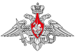
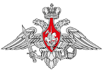
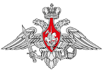

Разработку технического проекта была завершена к концу лета, 27 августа 1938 г. начальник Бюро «24» М.И. Кошкин и руководитель проекта А.А. Морозов подписали «Объяснительную записку к техническому проекту танка А-20 и А-20 гус.». Технический проект и макет танка А-20 были рассмотрены в начале сентября 1938 г. прибывшей на завод № 183 макетной комиссией под председательством начальника 8-го отдела АБТУ РККА военинженера 1 ранга Я.Л. Сквирского. По результатам работы макетной комиссии 6 сентября 1938 г. был составлен протокол, в котором, в частности, было указано:
На протяжении всей осени 1938 г. коллектив Бюро «24» плодотворно работал над реализацией изменений и дополнений, предложенных членами макетной комиссии при рассмотрении 6 сентября 1938 г. технического проекта и модели танка А-20. В начале декабря начальник Бюро «24» М.И. Кошкин и ведущий инженера проекта А.А. Морозов прибыли в Москву для участия в заседании Главного военного совета РККА, которое состоялось в Кремле 9 и 10 декабря 1938 г. под председательством народного комиссара обороны СССР Маршала Советского Союза К.Е. Ворошилова, где было доложено Главному Военному Совету о выполнении полученного задания по новому танку А-20 и обоснована разработка "инициативного" варианта танка (А-32).
В мае 1939 года оба танка были изготовлены и начались их ходовые испытания. По результатам испытаний А-20 показал несколько лучшую подвижность при движении на колёсах, но уступил А-32 в проходимости. Кроме того, возможности ходовой части А-20 не позволяли усилить бронезащиту и вооружение, тогда как на А-32 к началу совместных испытаний установили 76-мм пушку Л-10, а толщина брони была больше на 5—10 мм и было возможно её дальнейшее увеличение.
В конце сентября 1939 года после показа А-20 и А-32 (водитель-испытатель Н. Ф. Носик) на полигоне в Кубинке руководству НКО и членам правительства было принято решение о увеличении толщины брони А-32 до 45 мм, после чего начались ходовые испытания танка А-32, догруженного балластом (при этом на танке была установлена башня от А-20 с 45-мм пушкой).
19 декабря на заседании Комитета обороны, по результатам испытаний А-32, было принято постановление № 443, которое предписывало:Принять на вооружение РККА: Танк А-32 — гусеничный, с дизель-мотором В-2, изготовленный заводом № 183 Наркомсреднемашпрома, со следующими изменениями:
Присвоить указанному танку название Т-34.
Январь 1940 года. Постановлением Комитета обороны от января 1940 г. № 85 задано изготовить два гусеничных танка на базе А-32 с учётом утолщённой до 45 мм брони и установки 76-мм пушки Л-II. В период напряжённой работы на сборке двух танков Т-34 на завод поступили две пушки из разных организаций — Л-11 из Ленинграда и Ф-32 из Горького (завод № 92). Они сразу поступили на сборку и никто не обратил внимания на различия их по длине ствола пушки. Заметили это уже на собранном танке. Срочно сообщили М. И. Кошкину, ведь выступание пушки за носовой лист корпуса считалось тогда дефектом, так как ствол пушки при преодолевании рва, окопа и других препятствий мог «уткнуться» в грунт. Но танк уже был собран, другой пушки не было, и танк ушёл на испытания. Опытная пушка Ф-32, созданная для танка КВ, была доработана для установки в башню предсерийного прототипа Т-34 под руководством сотрудника ОКБ завода № 92 — П. Муравьёва.
Февраль-март 1940 года. Два опытных Т-34 проходили испытания под Харьковом. Они полностью подтвердили высокие технические и боевые качества. Боевой вес 26,6, т.; Дизель В-2 мощностью 500 л. с.; Максимальная скорость — 54 км/час; Броневая защита — толщиной 45 мм (35 — 15- 10). Удельная мощность 19,5 л. с. на тонну веса
17 марта 1940 года в Кремле, на Ивановской площади, танки Т-34, а также танки других заводов были продемонстрированы членам правительства. После осмотра в Кремле танки Т-34 были испытаны на подмосковном полигоне и на Карельском перешейке. На подмосковном полигоне танки подверглись обстрелу прямой наводкой фугасными и бронебойными снарядами, по результатам обстрела было решено внести изменения в конфигурацию башни.
31 марта 1940 года был подписан протокол Государственного Комитета Обороны о серийном производстве танка Т-34 на заводе № 183. Общий план выпуска на 1940 год устанавливался в 200 машин, с 1942 СТЗ и ХПЗ должны были полностью перейти на выпуск Т-34 с планом 2000 танков в год.
К 7 июня 1940 года план производства Т-34 был увеличен до 600 машин, 500 из которых должен был поставить завод № 183, тогда как остальные 100 — СТЗ[18]. Из-за задержек с поставками комплектующих в июне на заводе № 183 были собраны только четыре машины, выпуск танков на СТЗ ещё более задерживался.
В июле 1940 года завод № 183 остановил производство танков БТ-7М. Позже Танковому КБ завода № 183 выдано задание на разработку улучшенного варианта Т-34, под обозначением Т-34М, для которого были определены следующие требования:
В течение осени 1940 года в конструкцию Т-34 был внесён и ряд более крупных изменений, таких как установка более мощной пушки Ф-34, также на Мариупольском металлургическом заводе им. Ильича были разработаны литая и штампованная башни.
В январе 1941 года был начат серийный выпуск 76,2-мм пушки Ф-34 (вариант пушки Ф-32, доработанный для установки в танк Т-34) с длиной ствола в 41 калибр. Пушка Ф-34 по своим характеристикам значительно превосходила пушку Л-11.
В апреле 1941 года Танковое КБ завода № 183, под руководством А. А. Морозова, завершило разработку проекта модернизации танка Т-34 (войсковое обозначение Т-34М, в соответствии с заданием полученным летом 1940 года) — фактически новой машины. Заново спроектированы корпус и башня улучшенной конструкции и увеличенного объёма, ходовая часть с торсионной подвеской с опорными катками уменьшенного диаметра с внутренней амортизацией (по аналогии с тяжёлым КВ), разработаны другие мероприятия. Рабочие чертежи сразу же передавались в производство. В цехах полным ходом изготавливались детали, собирались узлы, в бронекорпусном отделении велась подготовка к закладке нового корпуса[23]. В этом же месяце на завод № 183 прибыла комиссия ГАБТУ и дала следующее заключение: прекратить выпуск Т-34, налаживать производство Т-34М.
В мае 1941 года во время обсуждения проблемы производства танка Т-34 в Комитете Обороны, представители армии предложили прекратить выпуск существующей модели танка и возобновить его уже в варианте Т-34М, по сути — практически новой машины, которая к маю 1941 года существовала ещё лишь в чертежах и макете.
5 мая 1941 года вышло Постановление СНК и ЦК ВКП(б) следующего содержания:
В. А. Малышев, несмотря на протесты главного инженера завода — С. Н. Махонина и главного конструктора завода — А. А. Морозова, приказал снять с производства танк Т-34 и немедленно начать выпуск Т-34М, по которому ещё не успели в полной мере отработать рабочие чертежи и не изготовили ни одного опытного образца.
В апреле 1941 года планируемое орудие ЗИС установили и на Т-34. Испытания в целом были провалены, а пушку отправили на доработку. С заводов уже поступил другой вариант орудия под названием ЗИС-4, который показал отличные результаты, пробивая с максимальной дистанции броню толщиной 73-82 мм, а с минимальной броню толщиной 83-98 мм. Пушку потом дополнительно доработали, увеличив длину ствола и добавив специальные противовесы массой 180 кг.
Танк с данным орудием был назван Т-34-57. Производство планировалось начать летом 1941 года, но начало войны изменило эти планы. ХПЗ получил 21 орудие, СТЗ получил 20 пушек. Осенью 1941 года харьковский завод был эвакуирован, а часть работы передали заводу № 112, где в октябре надлежало построить 100 танков с новым орудием. Однако всего такие пушки получили только 10 машин, которые вошли в состав 21-й танковой бригады из Владимира. 14 октября 1941 года она прибыла на фронт и начала наступление на Калинин. За 4 дня боёв танки уничтожили 1000 солдат и офицеров, подбили 34 немецких танка, 210 автомашин, 25 противотанковых и 6 «термитных» орудий, а также разрушили 3 штаба группы армий «Центр». Но при этом погибли командир 21-го танкового полка 21-танковой бригады Михаил Лукин[2] и командир 1-го танкового батальона Михаил Агибалов. 25 ноября 1941 годатанковую бригаду Т-34-57 всё же уничтожили.
Выпуск танков был приостановлен ввиду «избыточной мощности» пушек класса ЗИС. Только во время Курской битвы пушки вновь начали воевать ввиду того, что на фронте появился тяжёлый немецкий танк PzKpfw VI, известный как «Тигр».
К 22 июня 1941 года в строю было 1066 танков Т-34.
22 июня 1941 года началась Великая Отечественная война. Вызванный в Москву директор завода № 183 — Ю. Е. Максарёв получил приказ от наркома — В. А. Малышева: «Немедленно возвращайтесь на завод. Никаких модернизаций Т-34, задерживающих выпуск машин. Улучшение, модернизация — в ходе производства, без снижения выпуска машин. План — 250 в месяц, уже в июле»
К концу июня 1941 года всего было выпущено — 1110 ед. танков Т-34 — 40 % от всего производства танков в СССР
1 июля 1941 года постановлением № 1 Государственного комитета обороны план выпуска танков Т-34 на заводе № 183 и СТЗ значительно увеличен, дополнительно привлекается горьковский завод № 112 («Красное Сормово»). Принимаются меры по оптимизации производственных цепочек. Так, например, если в июне 1941 года заводом № 183 было сдано представителям военной приёмки 170 танков Т-34, то в июле — 209, а в августе — 266 боевых машин.
В 1943 году последовало распоряжение вновь начать серийное производство танков-истребителей Т-34-57. В этот раз использовалось модифицированное орудие ЗИС-4М (от начального оно отличалось унифицированным затвором, более простым механизмом полуавтоматики и измененным креплением муфты в люльке орудия). Также ввели в боекомплект более мощный снаряд, пробивавший на расстоянии 1000 м броню толщиной 96 мм. Несколько орудий были уничтожены в результате выстрелов, однако производство не свернули. Всё же только три танка были отправлены на фронт в 100-ю особую танковую роту. С 15 августа по 5 сентября 1943 года танки проходили фронтовые испытания.
Серийное производство модифицированных Т-34-57 развернуто так и не было. Осенью 1943 года больший приоритет получили 85-мм орудия, так что все работы по 57-мм ЗИСам вскоре свернули. Тем не менее, производство самих 57-мм противотанковых пушек ЗИС-2продолжалось и в 1944 году.
12 июля в районе Прохоровки произошёл крупнейший (или один из крупнейших) в истории встречный танковый бой. Немцы предприняли два сильных удара на Прохоровку, с запада и с юга. Противник, сосредоточив западнее Прохоровки до четырёх танковых и до одной пехотной дивизии, бросил их вдоль шоссе на восток. Кроме того, с юга на Прохоровку нацеливался удар 3ТК в составе 300 танков[15]. 12 июля развернулось два танковых сражения, одно — в районе западнее Прохоровки, в котором приняли участие главные силы 5 гв. ТА и главная немецкая группировка в составе трёх дивизий танкового корпуса СС и 17 танковой дивизии. Другое — в районе Рындинка, Ржавец, Выползовка, где столкнулись танковые части из состава 5 гв. ТА — отряд ген. Труфанова (три танковые бригады) и основные силы 3ТК (три танковые дивизии). Согласно же донесению разведотдела (РО) штаба ВФ, в двух районах, где действовали войска 5 гв.
T-34-85 — войсковое обозначение последней модификации советского среднего танка Т-34 с орудием калибра 85-мм. Принят на вооружение РККА Постановлением ГКО № 5021 от 23 января 1944 года.
Спроектирован на базе серийного танка Т-34 образца 1942 года. Установка 85-мм пушки и конструктивные доработки значительно повысили боевую эффективность танка Т-34-85 по сравнению с Т-34-76.
Великая Отечественная Война 1941-1945гг. – это величайшая Победа нашего народа, героический и трагический этап в истории российского государства..
Победа ковалась на всех фронтах и в тылу. Она была достигнута благодаря беспримерному мужеству, героизму и жертвенности воинов и тружеников тыла
На алтарь Победы были положены жизни миллионов лучших сынов и дочерей нашей Родины и это навсегда сохранится в памяти поколений
Важнейший вклад в Победу внесли созданные нашими конструкторами и рабочими уникальные образцы военной техники и вооружения, к числу которых по праву относится средний танк Т-34 - самый массовый танк войны, сочетающий в себе высокие тактико-технические характеристики, технологичность производства и простоту обслуживания.
Это Танк-солдат, который с честью прошел всю войну и до сих пор стоит на вооружении некоторых стран мира.
В рамках данного проекта создан и применен на практике современный инструментарий, позволяющий собирать и отображать на электронных картах любые данные об этой уникальной боевой машине – истории создания, характеристиках, картах боевых действий и их участниках, составах экипажей танков и их боевом пути, местоположении и состоянии памятных мест и другую информацию.
Важнейшая задача проекта - вовлечь молодежь в массовую военно-патриотическую работу по увековечиванию памяти нашего Отечества с использованием цифровых технологий.
Рассчитываем , что этот почин будет подхвачен молодым поколением применительно не только к танку Т-34, но и другим образцам отечественного вооружения - символам нашей Великой Победы.
